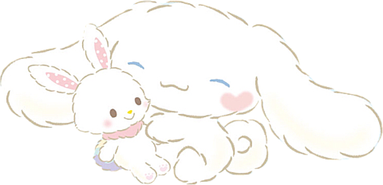
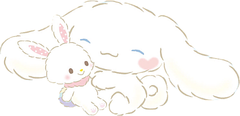

Cinnamoroll is a small white puppy with big ears
who spends his time as "Café Cinnamon"'s mascot. He's
a little shy, but also very sweet! He may come sit on
your lap if you're lucky!
Fun fact: he can use his big ears to fly.
Birthday: March 6, 2002
Mocha is a girly and somewhat bossy puppy. She's like a big sister to the other residents of Café Cinnamon, and is very sweet at heart. She enjoys fashion and is considered "trendy".
Birthday: February 20th, 2005
 
